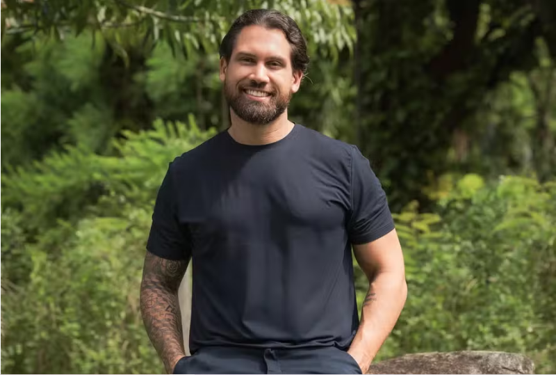
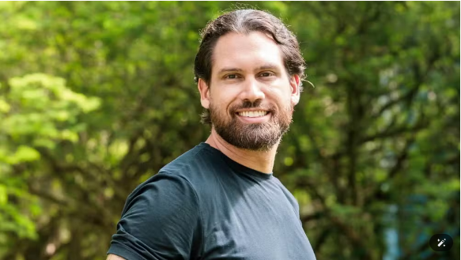
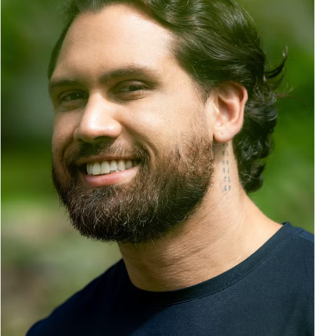
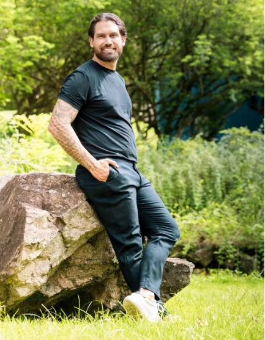

Eliminado, Brigido diz não ver rejeição mas admite frustração com número de seguidores: "Queria um pouco mais"
Em papo exclusivo com a QUEM, eliminado se defende de acusações e revela transformação
com
Legendários: 'Me ajudou a perdoar minha mãe e meu pai'

Brigido — Foto: Globo/Beatriz Damy
Eliminado no terceiro paredão do BBB 26 na última
terça-feira(3), em uma disputa contra Ana Paula
Renault e Leandro, Brigido deixou o programa com um dos maiores
índices de votos da edição (com uma
média de 77,88%). Mesmo assim, o empreendedor manauara, de 34 anos, não define sua eliminação como
rejeição.
"Eu fui para um paredão bem concorrido, com a Ana Paula, que é favorita, tem uma superpopularidade, e com o aliado dela, o Boneco. Foram duas torcidas contra a minha. Eu acabei recebendo mais votos, mas não enxergo isso como rejeição. Foi um paredão desfavorável"
Avalia o ex-BBB em um papo exclusivo com a Quem nos bastidores da Rádio Globo, nesta quinta (5).
Para Brigido, a comparação com o paredão de Matheus -- que deixou o programa semana passada com 79,48% da média dos votos após disputar o paredão com ele e com Leandro -- também não é justa. “No paredão dele, os participantes não eram antagonistas entre si. No meu, eram dois lados opostos. Eu acabei ficando no meio e levando mais votos", opina.
"Estratégia faz parte de quem sou"

Brigido — Foto: Beatriz Damy/TV Globo/DivulgaçãoDentro da casa, Brigido foi frequentemente rotulado como um jogador estrategista, alguém que teria entrado com o jogo "estudado". Ele admite, contudo, que levou para o reality as mesmas habilidades que usa fora dele.
"Na vida real, eu trabalho com estratégia, visão e planejamento. Isso é quem eu sou. Lá dentro, eu tentava entender o perfil de cada jogador, os pontos fortes, os pontos fracos, como cada um se comportava, como estavam as relações, os votos. Eu queria entender o jogo o tempo todo", conta.
Segundo o ex-brother, em muitas conversas, outros participantes tinham uma leitura parecida da dinâmica da casa, o que reforça que seu comportamento não era algo isolado.
Legendários

Brigido — Foto: Beatriz Damy/TV Globo/DivulgaçãoOutro assunto que despertou curiosidade do público dentro e fora da casa foi sua ligação com o movimento Legendários, citado diversas vezes durante o programa. "É um movimento cristão, um retiro de homens. A gente chama de 'subir a montanha'. O que acontece lá é confidencial, porque falar tira a experiência de quem ainda vai", explica.
Brigido participou do retiro há um ano, em um momento em que buscava ressignificar sua vida. Segundo ele, a experiência foi transformadora. "O Legendários me ajudou a perdoar minha mãe e meu pai. A gente carrega muitas dores e aquilo me deixou mais leve. Reconfigurei crenças, mudei comportamentos, passei a ter hábitos melhores", afirma.
Foi a partir dessa mudança que ele se aproximou mais da igreja e fortaleceu sua relação com Deus. "Ali, eu entendi que queria construir uma família, casar, ter filhos. Não queria mais viver a vida de solteiro que eu levava", co
Planos ao lado de Adriane Façanha
Essa nova fase também influenciou diretamente sua vida amorosa. Brigido conta que foi depois do Legendários que começou o relacionamento com Adriane Façanha, com quem hoje planeja se casar. "O movimento só me aproximou disso, só me aproximou de Deus e me trouxe comportamentos melhores", diz.
Ele reforça, contudo, que o Legendários não é a única forma de transformação espiritual, mas foi uma ferramenta importante em sua jornada. "Você pode se conectar com Deus sem isso, mas para mim foi algo que fez muito bem. Hoje, tenho uma intimidade com Deus que eu não tinha antes", destaca.
"Ela é meu amuleto da sorte em tudo"
Segundo ele, o relacionamento com Adriane foi decisivo para que aceitasse entrar no reality. "Eu só fui para o BBB por causa da Adriane. Ela é meu amuleto da sorte em tudo", elogia ele, que estava com a namorada havia apenas seis meses quando entrou no programa. Mas a ideia de se inscrever já existia antes. "Ela já sabia que eu tinha esse plano. Quando o processo seletivo começou, a gente já estava junto e, em todo momento, ela me apoiou e me incentivou".
Brigido conta que eles tentaram manter os pés no chão durante todo o processo. "A gente sempre foi muito pé no chão com expectativa. Se não acontecesse, estava tudo bem, porque isso não podia ser o centro da nossa vida", recorda. Mas quando o processo avançou, em novembro, a sensação mudou: "Ali o olho pulou. A gente começou a acreditar que ia rolar, mas ainda sem noção nenhuma da proporção".
Para ele, a participação no BBB sempre foi vista como um projeto de vida em conjunto. "A gente entendeu que isso poderia ser benéfico para nossa família, pela experiência e pelas oportunidades. A ideia era que isso fortalecesse a gente como casal e ajudasse a realizar nossos sonhos: ter nossa casa, construir nossa família", afirma.
Frustração com os números
Ao sair do programa, Brigido se surpreendeu com a quantidade de seguidores no Instagram. "Quando eu vi, eu tinha cerca de 63 mil. Dos participantes, eu fui o que menos ganhou seguidores", conta ele, admitindo que ficou sem entender: "A gente não sabe se é algoritmo, rejeição… Mas tudo bem. Claro que a gente cria expectativa, porque isso vira ferramenta de trabalho. Eu queria um pouco mais: 100 mil, 200 mil seguidores seria algo bem legal".
Agora, ele quer mudar a percepção do público sobre ele. "Lá dentro todo mundo vê o jogador. Aqui fora eu quero mostrar o Brigido pessoa, não só o estrategista", afirma ele, que quer revelar seu lado mais leve. "Aqui eu consigo ser simpático, divertido, mostrar meu trabalho, minhas ideias. Quero mostrar como a gente pode melhorar a educação, como pode melhorar o empreendedorismo e, se Deus quiser, levar esse trabalho para o Brasil todo", planeja.
Arrependimento?
Brigido afirma que não se arrepende de sua participação, mas faria algo diferente. "Eu entrei muito armado, com plano, estratégia. Hoje eu iria mais aberto, mais relaxado, disposto a conhecer as pessoas. O jogo ia acontecer naturalmente. Acho que isso teria resultado em uma jornada diferente", analisa.
Entre os participantes, Brigido revelou seus favoritos: "Tenho afinidade com Jonas, Sara, Cowboy e Jordana. Mas eu torço para o Cowboy. Ele me surpreendeu. A garra dele na primeira Prova do Líder foi impressionante. Se deixasse, ele estava lá até agora", elogia. Quanto aos brothers que ele considera que fazem um "jogo sujo", ele foi direto: "Uma pessoa que eu não achei legal foi o Juliano. Ele mudava de ideia e posicionamento muito rápido. Se conectava e depois fingia que não tinha existido". Quanto a Ana Paula Renault, ele a define como "o suco de confusão do Big Brother Brasil".

Brigido — Foto: Globo/Beatriz Damy